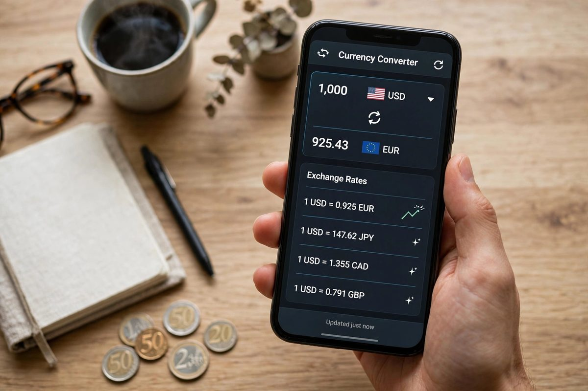

Best Currency Converter Apps and Tools in 2026

What a good converter app does
A good currency converter app shows the mid-market rate clearly, converts instantly, and lets you compare many currencies at once. It should work offline for the last fetched rates, so you can check prices without data, and it should show the rate's date and source, so you know how fresh the number is. The best apps also include a rate alert, a historical chart, and a calculator that adds fees, so the number you see is the number you will actually pay.
Many converter apps are free and earn money from advertising or from offering transfers, and that is fine, provided the rate they show is the true mid-market rate and not a rate with a hidden margin. Be suspicious of any app whose rate is noticeably better than the mid-market rate, since that is impossible, and of any app that does not show its source. A converter that hides its source is hiding something else too.
Converter, transfer service or bank app
There are three kinds of tool, and they serve different purposes. A pure converter, such as the one on this site, is best for quick checks and comparisons, because it shows the mid-market rate with no agenda. A transfer service app is best for actually sending money, since it shows the rate you will get, including the spread and fee, and lets you complete the transfer. A bank app is convenient but usually shows a poor rate, and it is the worst of the three for comparing costs.
Multi-currency account apps combine all three: they convert, hold, and spend money in many currencies, and they are the best choice for frequent travellers and freelancers. Choose the tool that matches your need: a converter for checking, a specialist for sending, and a multi-currency account for regular use. Using the wrong tool for the job is how most people overpay.
Features worth having
Rate alerts are the most useful feature after the converter itself, since they tell you when a rate reaches a level you want without you watching the market. Historical charts help you judge whether today's rate is good or bad compared with the last month or year. An offline mode matters when you travel without data, and a widget or quick calculator saves time when you are shopping and need a fast conversion.
Finally, check the app's reviews and its privacy policy before installing it. A converter app does not need access to your contacts or location, and one that asks for them may be collecting data it does not need. The best tools are simple, transparent, and honest about their rates, and they earn trust by showing their workings rather than hiding them.
Putting It Into Practice
Test your current converter app against the mid-market rate on this site for three currency pairs, and check whether it shows its source and the rate's date. If it does not, or if its rate differs from the mid-market rate, switch to one that does. Then set a rate alert for a pair you care about and see whether the alert arrives when the rate moves. A converter you can trust, with alerts and offline rates, is a small tool that saves real money over time.
Frequently Asked Questions
What is the best currency converter app?
One that shows the true mid-market rate, its source and date, works offline, and offers rate alerts. Avoid apps that hide their source.
Are free currency converter apps accurate?
Most use the mid-market rate and are accurate for checking. The rate you get when actually converting will be worse because of the spread.
Should I use my bank app to convert currency?
For checking, no, since bank rates include a large margin. Use a mid-market converter to check, and a specialist to send.